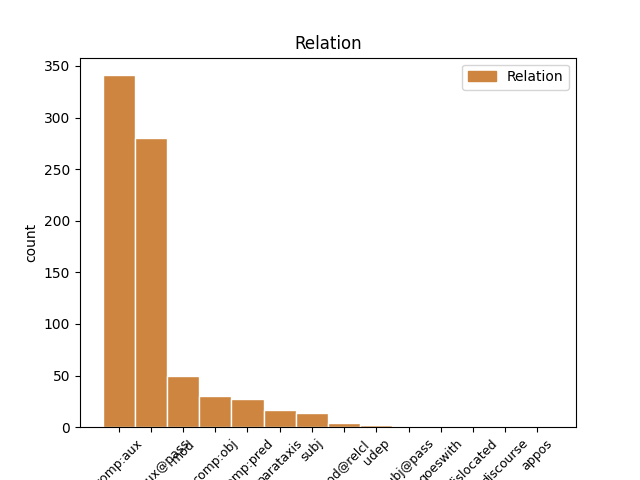
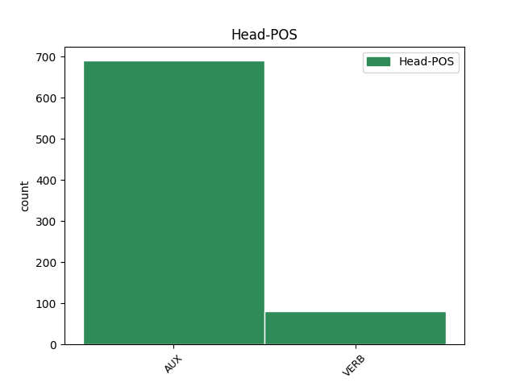
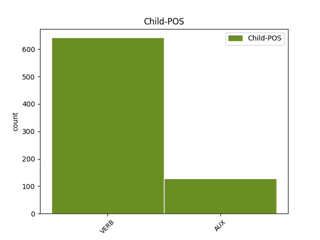

Distribution of features within this leaf



Agreement Rules sorted by frequency.
- When the dependent token is the complement for auxiliary(comp:aux@pass) of the head token, and the head token is AUX and the dependent token is VERB.
1 No _ _ _ _ 0 _ _ _
2 Shakespearean _ _ _ _ 0 _ _ _
3 poems _ _ _ _ 0 _ _ _
4 were be AUX VA Mood=Ind|Number=Plur|Tense=Past|VerbForm=Fin 0 _ _ _
5 included include VERB V Tense=Past|VerbForm=Part 4 comp:aux@pass _ _
6 in _ _ _ _ 0 _ _ _
7 the _ _ _ _ 0 _ _ _
8 First _ _ _ _ 0 _ _ _
9 Folio _ _ _ _ 0 _ _ _
10 . _ _ _ _ 0 _ _ _
1 In _ _ _ _ 0 _ _ _
2 1591 _ _ _ _ 0 _ _ _
3 the _ _ _ _ 0 _ _ _
4 authorities _ _ _ _ 0 _ _ _
5 reported _ _ _ _ 0 _ _ _
6 that _ _ _ _ 0 _ _ _
7 John _ _ _ _ 0 _ _ _
8 Shakespeare _ _ _ _ 0 _ _ _
9 had have AUX VA Mood=Ind|Person=3|Tense=Past|VerbForm=Fin 0 _ _ _
10 missed miss VERB V Tense=Past|VerbForm=Part 9 comp:aux _ _
11 church _ _ _ _ 0 _ _ _
12 " _ _ _ _ 0 _ _ _
13 for _ _ _ _ 0 _ _ _
14 fear _ _ _ _ 0 _ _ _
15 of _ _ _ _ 0 _ _ _
16 process _ _ _ _ 0 _ _ _
17 for _ _ _ _ 0 _ _ _
18 debt _ _ _ _ 0 _ _ _
19 " _ _ _ _ 0 _ _ _
20 , _ _ _ _ 0 _ _ _
21 a _ _ _ _ 0 _ _ _
22 common _ _ _ _ 0 _ _ _
23 Catholic _ _ _ _ 0 _ _ _
24 excuse _ _ _ _ 0 _ _ _
25 . _ _ _ _ 0 _ _ _
1 Soliloquies _ _ _ _ 0 _ _ _
2 had have AUX VA Mood=Ind|Person=3|Tense=Past|VerbForm=Fin 0 _ _ _
3 been be AUX VA Tense=Past|VerbForm=Part 2 comp:aux _ _
4 used _ _ _ _ 0 _ _ _
5 mainly _ _ _ _ 0 _ _ _
6 to _ _ _ _ 0 _ _ _
7 convey _ _ _ _ 0 _ _ _
8 information _ _ _ _ 0 _ _ _
9 about _ _ _ _ 0 _ _ _
10 characters _ _ _ _ 0 _ _ _
11 or _ _ _ _ 0 _ _ _
12 events _ _ _ _ 0 _ _ _
13 ; _ _ _ _ 0 _ _ _
1 ... _ _ _ _ 0 _ _ _
2 there _ _ _ _ 0 _ _ _
3 is _ _ _ _ 0 _ _ _
4 an _ _ _ _ 0 _ _ _
5 upstart _ _ _ _ 0 _ _ _
6 Crow _ _ _ _ 0 _ _ _
7 , _ _ _ _ 0 _ _ _
8 beautified _ _ _ _ 0 _ _ _
9 with _ _ _ _ 0 _ _ _
10 our _ _ _ _ 0 _ _ _
11 feathers _ _ _ _ 0 _ _ _
12 , _ _ _ _ 0 _ _ _
13 that _ _ _ _ 0 _ _ _
14 with _ _ _ _ 0 _ _ _
15 his _ _ _ _ 0 _ _ _
16 Tiger _ _ _ _ 0 _ _ _
17 's _ _ _ _ 0 _ _ _
18 heart _ _ _ _ 0 _ _ _
19 wrapped _ _ _ _ 0 _ _ _
20 in _ _ _ _ 0 _ _ _
21 a _ _ _ _ 0 _ _ _
22 Player _ _ _ _ 0 _ _ _
23 's _ _ _ _ 0 _ _ _
24 hide _ _ _ _ 0 _ _ _
25 , _ _ _ _ 0 _ _ _
26 supposes suppose VERB V Mood=Ind|Number=Sing|Person=3|Tense=Pres|VerbForm=Fin 0 _ _ _
27 he _ _ _ _ 0 _ _ _
28 is be AUX V Mood=Ind|Number=Sing|Person=3|Tense=Pres|VerbForm=Fin 26 comp:obj _ _
29 as _ _ _ _ 0 _ _ _
30 well _ _ _ _ 0 _ _ _
31 able _ _ _ _ 0 _ _ _
32 to _ _ _ _ 0 _ _ _
33 bombast _ _ _ _ 0 _ _ _
34 out _ _ _ _ 0 _ _ _
35 a _ _ _ _ 0 _ _ _
36 blank _ _ _ _ 0 _ _ _
37 verse _ _ _ _ 0 _ _ _
38 as _ _ _ _ 0 _ _ _
39 the _ _ _ _ 0 _ _ _
40 best _ _ _ _ 0 _ _ _
41 of _ _ _ _ 0 _ _ _
42 you _ _ _ _ 0 _ _ _
43 : _ _ _ _ 0 _ _ _
1 In _ _ _ _ 0 _ _ _
2 the _ _ _ _ 0 _ _ _
3 case _ _ _ _ 0 _ _ _
4 of _ _ _ _ 0 _ _ _
5 King _ _ _ _ 0 _ _ _
6 Lear _ _ _ _ 0 _ _ _
7 , _ _ _ _ 0 _ _ _
8 however _ _ _ _ 0 _ _ _
9 , _ _ _ _ 0 _ _ _
10 while _ _ _ _ 0 _ _ _
11 most _ _ _ _ 0 _ _ _
12 modern _ _ _ _ 0 _ _ _
13 editions _ _ _ _ 0 _ _ _
14 do _ _ _ _ 0 _ _ _
15 conflate _ _ _ _ 0 _ _ _
16 them _ _ _ _ 0 _ _ _
17 , _ _ _ _ 0 _ _ _
18 the _ _ _ _ 0 _ _ _
19 1623 _ _ _ _ 0 _ _ _
20 folio _ _ _ _ 0 _ _ _
21 version _ _ _ _ 0 _ _ _
22 is _ _ _ _ 0 _ _ _
23 so _ _ _ _ 0 _ _ _
24 different _ _ _ _ 0 _ _ _
25 from _ _ _ _ 0 _ _ _
26 the _ _ _ _ 0 _ _ _
27 1608 _ _ _ _ 0 _ _ _
28 quarto _ _ _ _ 0 _ _ _
29 , _ _ _ _ 0 _ _ _
30 that _ _ _ _ 0 _ _ _
31 the _ _ _ _ 0 _ _ _
32 Oxford _ _ _ _ 0 _ _ _
33 Shakespeare _ _ _ _ 0 _ _ _
34 prints print VERB V Mood=Ind|Number=Sing|Person=3|Tense=Pres|VerbForm=Fin 0 _ _ _
35 them _ _ _ _ 0 _ _ _
36 both _ _ _ _ 0 _ _ _
37 , _ _ _ _ 0 _ _ _
38 arguing argue VERB V Number=Sing|Tense=Pres|VerbForm=Part 34 mod _ _
39 that _ _ _ _ 0 _ _ _
40 they _ _ _ _ 0 _ _ _
41 can _ _ _ _ 0 _ _ _
42 not _ _ _ _ 0 _ _ _
43 be _ _ _ _ 0 _ _ _
44 conflated _ _ _ _ 0 _ _ _
45 without _ _ _ _ 0 _ _ _
46 confusion _ _ _ _ 0 _ _ _
47 . _ _ _ _ 0 _ _ _
1 The _ _ _ _ 0 _ _ _
2 London _ _ _ _ 0 _ _ _
3 public _ _ _ _ 0 _ _ _
4 playhouses _ _ _ _ 0 _ _ _
5 were _ _ _ _ 0 _ _ _
6 repeatedly _ _ _ _ 0 _ _ _
7 closed _ _ _ _ 0 _ _ _
8 during _ _ _ _ 0 _ _ _
9 extended _ _ _ _ 0 _ _ _
10 outbreaks _ _ _ _ 0 _ _ _
11 of _ _ _ _ 0 _ _ _
12 the _ _ _ _ 0 _ _ _
13 plague _ _ _ _ 0 _ _ _
14 ( _ _ _ _ 0 _ _ _
15 a _ _ _ _ 0 _ _ _
16 total _ _ _ _ 0 _ _ _
17 of _ _ _ _ 0 _ _ _
18 over _ _ _ _ 0 _ _ _
19 60 _ _ _ _ 0 _ _ _
20 months _ _ _ _ 0 _ _ _
21 closure _ _ _ _ 0 _ _ _
22 between _ _ _ _ 0 _ _ _
23 May _ _ _ _ 0 _ _ _
24 1603 _ _ _ _ 0 _ _ _
25 and _ _ _ _ 0 _ _ _
26 February _ _ _ _ 0 _ _ _
27 1610 _ _ _ _ 0 _ _ _
28 ) _ _ _ _ 0 _ _ _
29 , _ _ _ _ 0 _ _ _
30 which _ _ _ _ 0 _ _ _
31 meant mean VERB V Mood=Ind|Person=3|Tense=Past|VerbForm=Fin 0 _ _ _
32 there _ _ _ _ 0 _ _ _
33 was be VERB V Mood=Ind|Number=Sing|Person=3|Tense=Past|VerbForm=Fin 31 comp:obj _ _
34 often _ _ _ _ 0 _ _ _
35 no _ _ _ _ 0 _ _ _
36 acting _ _ _ _ 0 _ _ _
37 work _ _ _ _ 0 _ _ _
38 . _ _ _ _ 0 _ _ _
1 " _ _ _ _ 0 _ _ _
2 What _ _ _ _ 0 _ _ _
3 a _ _ _ _ 0 _ _ _
4 man _ _ _ _ 0 _ _ _
5 he _ _ _ _ 0 _ _ _
6 would will AUX VM Mood=Ind|Person=3|Tense=Past|VerbForm=Fin 0 _ _ _
7 have _ _ _ _ 0 _ _ _
8 been _ _ _ _ 0 _ _ _
9 had have AUX VA Tense=Past|VerbForm=Part 6 mod _ _
10 he _ _ _ _ 0 _ _ _
11 known _ _ _ _ 0 _ _ _
12 how _ _ _ _ 0 _ _ _
13 to _ _ _ _ 0 _ _ _
14 write _ _ _ _ 0 _ _ _
15 ! _ _ _ _ 0 _ _ _
1 " _ _ _ _ 0 _ _ _
2 When _ _ _ _ 0 _ _ _
3 the _ _ _ _ 0 _ _ _
4 characters _ _ _ _ 0 _ _ _
5 reappear _ _ _ _ 0 _ _ _
6 " _ _ _ _ 0 _ _ _
7 , _ _ _ _ 0 _ _ _
8 notes note VERB V Mood=Ind|Number=Sing|Person=3|Tense=Pres|VerbForm=Fin 13 mod _ _
9 Rogers _ _ _ _ 0 _ _ _
10 , _ _ _ _ 0 _ _ _
11 " _ _ _ _ 0 _ _ _
12 they _ _ _ _ 0 _ _ _
13 do do AUX VM Mood=Ind|Number=Plur|Tense=Pres|VerbForm=Fin 0 _ _ _
14 not _ _ _ _ 0 _ _ _
15 step _ _ _ _ 0 _ _ _
16 out _ _ _ _ 0 _ _ _
17 of _ _ _ _ 0 _ _ _
18 nowhere _ _ _ _ 0 _ _ _
19 ; _ _ _ _ 0 _ _ _
1 The _ _ _ _ 0 _ _ _
2 Comedy _ _ _ _ 0 _ _ _
3 of _ _ _ _ 0 _ _ _
4 Errors _ _ _ _ 0 _ _ _
5 was be AUX V Mood=Ind|Number=Sing|Person=3|Tense=Past|VerbForm=Fin 0 _ _ _
6 also _ _ _ _ 0 _ _ _
7 based base VERB V Tense=Past|VerbForm=Part 5 comp:pred _ _
8 on _ _ _ _ 0 _ _ _
9 classical _ _ _ _ 0 _ _ _
10 models _ _ _ _ 0 _ _ _
11 , _ _ _ _ 0 _ _ _
12 but _ _ _ _ 0 _ _ _
13 no _ _ _ _ 0 _ _ _
14 source _ _ _ _ 0 _ _ _
15 for _ _ _ _ 0 _ _ _
16 The _ _ _ _ 0 _ _ _
17 Taming _ _ _ _ 0 _ _ _
18 of _ _ _ _ 0 _ _ _
19 the _ _ _ _ 0 _ _ _
20 Shrew _ _ _ _ 0 _ _ _
21 has _ _ _ _ 0 _ _ _
22 been _ _ _ _ 0 _ _ _
23 found _ _ _ _ 0 _ _ _
24 , _ _ _ _ 0 _ _ _
25 though _ _ _ _ 0 _ _ _
26 it _ _ _ _ 0 _ _ _
27 is _ _ _ _ 0 _ _ _
28 related _ _ _ _ 0 _ _ _
29 to _ _ _ _ 0 _ _ _
30 a _ _ _ _ 0 _ _ _
31 separate _ _ _ _ 0 _ _ _
32 play _ _ _ _ 0 _ _ _
33 of _ _ _ _ 0 _ _ _
34 the _ _ _ _ 0 _ _ _
35 same _ _ _ _ 0 _ _ _
36 name _ _ _ _ 0 _ _ _
37 and _ _ _ _ 0 _ _ _
38 may _ _ _ _ 0 _ _ _
39 have _ _ _ _ 0 _ _ _
40 derived _ _ _ _ 0 _ _ _
41 from _ _ _ _ 0 _ _ _
42 a _ _ _ _ 0 _ _ _
43 folk _ _ _ _ 0 _ _ _
44 story _ _ _ _ 0 _ _ _
45 . _ _ _ _ 0 _ _ _
1 " _ _ _ _ 0 _ _ _
2 Realism _ _ _ _ 0 _ _ _
3 is be AUX V Mood=Ind|Number=Sing|Person=3|Tense=Pres|VerbForm=Fin 0 _ _ _
4 nothing _ _ _ _ 0 _ _ _
5 if _ _ _ _ 0 _ _ _
6 not _ _ _ _ 0 _ _ _
7 urban _ _ _ _ 0 _ _ _
8 " _ _ _ _ 0 _ _ _
9 , _ _ _ _ 0 _ _ _
10 notes note VERB V Mood=Ind|Number=Sing|Person=3|Tense=Pres|VerbForm=Fin 3 parataxis _ _
11 critic _ _ _ _ 0 _ _ _
12 Peter _ _ _ _ 0 _ _ _
13 Brooks _ _ _ _ 0 _ _ _
14 ; _ _ _ _ 0 _ _ _
1 That _ _ _ _ 0 _ _ _
2 is be AUX V Mood=Ind|Number=Sing|Person=3|Tense=Pres|VerbForm=Fin 0 _ _ _
3 why _ _ _ _ 0 _ _ _
4 leaders _ _ _ _ 0 _ _ _
5 and _ _ _ _ 0 _ _ _
6 policymakers _ _ _ _ 0 _ _ _
7 from _ _ _ _ 0 _ _ _
8 across _ _ _ _ 0 _ _ _
9 the _ _ _ _ 0 _ _ _
10 continent _ _ _ _ 0 _ _ _
11 have have AUX VA Mood=Ind|Number=Plur|Tense=Pres|VerbForm=Fin 2 subj _ _
12 declared _ _ _ _ 0 _ _ _
13 2014 _ _ _ _ 0 _ _ _
14 Africa _ _ _ _ 0 _ _ _
15 's _ _ _ _ 0 _ _ _
16 Year _ _ _ _ 0 _ _ _
17 of _ _ _ _ 0 _ _ _
18 Agriculture _ _ _ _ 0 _ _ _
19 and _ _ _ _ 0 _ _ _
20 Food _ _ _ _ 0 _ _ _
21 Security _ _ _ _ 0 _ _ _
22 . _ _ _ _ 0 _ _ _
1 The _ _ _ _ 0 _ _ _
2 Ukrainian _ _ _ _ 0 _ _ _
3 crisis _ _ _ _ 0 _ _ _
4 may _ _ _ _ 0 _ _ _
5 prove _ _ _ _ 0 _ _ _
6 helpful _ _ _ _ 0 _ _ _
7 , _ _ _ _ 0 _ _ _
8 though _ _ _ _ 0 _ _ _
9 that _ _ _ _ 0 _ _ _
10 appears appear VERB V Mood=Ind|Number=Sing|Person=3|Tense=Pres|VerbForm=Fin 0 _ _ _
11 less _ _ _ _ 0 _ _ _
12 likely _ _ _ _ 0 _ _ _
13 now _ _ _ _ 0 _ _ _
14 – _ _ _ _ 0 _ _ _
15 which _ _ _ _ 0 _ _ _
16 may may AUX VM Mood=Ind|Person=3|Tense=Pres|VerbForm=Fin 10 mod _ _
17 be _ _ _ _ 0 _ _ _
18 a _ _ _ _ 0 _ _ _
19 good _ _ _ _ 0 _ _ _
20 thing _ _ _ _ 0 _ _ _
21 to _ _ _ _ 0 _ _ _
22 the _ _ _ _ 0 _ _ _
23 extent _ _ _ _ 0 _ _ _
24 that _ _ _ _ 0 _ _ _
25 one _ _ _ _ 0 _ _ _
26 unintended _ _ _ _ 0 _ _ _
27 consequence _ _ _ _ 0 _ _ _
28 could _ _ _ _ 0 _ _ _
29 be _ _ _ _ 0 _ _ _
30 a _ _ _ _ 0 _ _ _
31 loan _ _ _ _ 0 _ _ _
32 to _ _ _ _ 0 _ _ _
33 Ukraine _ _ _ _ 0 _ _ _
34 that _ _ _ _ 0 _ _ _
35 is _ _ _ _ 0 _ _ _
36 larger _ _ _ _ 0 _ _ _
37 than _ _ _ _ 0 _ _ _
38 it _ _ _ _ 0 _ _ _
39 really _ _ _ _ 0 _ _ _
40 needs _ _ _ _ 0 _ _ _
41 . _ _ _ _ 0 _ _ _
1 I _ _ _ _ 0 _ _ _
2 share _ _ _ _ 0 _ _ _
3 the _ _ _ _ 0 _ _ _
4 regrets _ _ _ _ 0 _ _ _
5 she _ _ _ _ 0 _ _ _
6 expressed _ _ _ _ 0 _ _ _
7 , _ _ _ _ 0 _ _ _
8 namely _ _ _ _ 0 _ _ _
9 that _ _ _ _ 0 _ _ _
10 Parliament _ _ _ _ 0 _ _ _
11 has _ _ _ _ 0 _ _ _
12 become become VERB V Tense=Past|VerbForm=Part 0 _ _ _
13 involved involve VERB V Tense=Past|VerbForm=Part 12 comp:pred _ _
14 rather _ _ _ _ 0 _ _ _
15 late _ _ _ _ 0 _ _ _
16 in _ _ _ _ 0 _ _ _
17 the _ _ _ _ 0 _ _ _
18 day _ _ _ _ 0 _ _ _
19 as _ _ _ _ 0 _ _ _
20 regards _ _ _ _ 0 _ _ _
21 these _ _ _ _ 0 _ _ _
22 guidelines _ _ _ _ 0 _ _ _
23 , _ _ _ _ 0 _ _ _
24 since _ _ _ _ 0 _ _ _
25 by _ _ _ _ 0 _ _ _
26 now _ _ _ _ 0 _ _ _
27 the _ _ _ _ 0 _ _ _
28 procedure _ _ _ _ 0 _ _ _
29 for _ _ _ _ 0 _ _ _
30 negotiations _ _ _ _ 0 _ _ _
31 with _ _ _ _ 0 _ _ _
32 the _ _ _ _ 0 _ _ _
33 states _ _ _ _ 0 _ _ _
34 is _ _ _ _ 0 _ _ _
35 so _ _ _ _ 0 _ _ _
36 far _ _ _ _ 0 _ _ _
37 advanced _ _ _ _ 0 _ _ _
38 that _ _ _ _ 0 _ _ _
39 I _ _ _ _ 0 _ _ _
40 can _ _ _ _ 0 _ _ _
41 not _ _ _ _ 0 _ _ _
42 see _ _ _ _ 0 _ _ _
43 this _ _ _ _ 0 _ _ _
44 report _ _ _ _ 0 _ _ _
45 having _ _ _ _ 0 _ _ _
46 any _ _ _ _ 0 _ _ _
47 sort _ _ _ _ 0 _ _ _
48 of _ _ _ _ 0 _ _ _
49 immediate _ _ _ _ 0 _ _ _
50 effect _ _ _ _ 0 _ _ _
51 , _ _ _ _ 0 _ _ _
52 which _ _ _ _ 0 _ _ _
53 in _ _ _ _ 0 _ _ _
54 my _ _ _ _ 0 _ _ _
55 view _ _ _ _ 0 _ _ _
56 is _ _ _ _ 0 _ _ _
57 a _ _ _ _ 0 _ _ _
58 pity _ _ _ _ 0 _ _ _
59 . _ _ _ _ 0 _ _ _
1 The _ _ _ _ 0 _ _ _
2 Comédie _ _ _ _ 0 _ _ _
3 Humaine _ _ _ _ 0 _ _ _
4 remained remain VERB V Mood=Ind|Person=3|Tense=Past|VerbForm=Fin 0 _ _ _
5 unfinished _ _ _ _ 0 _ _ _
6 at _ _ _ _ 0 _ _ _
7 the _ _ _ _ 0 _ _ _
8 time _ _ _ _ 0 _ _ _
9 of _ _ _ _ 0 _ _ _
10 his _ _ _ _ 0 _ _ _
11 death _ _ _ _ 0 _ _ _
12 - _ _ _ _ 0 _ _ _
13 Balzac _ _ _ _ 0 _ _ _
14 had have VERB V Mood=Ind|Person=3|Tense=Past|VerbForm=Fin 4 parataxis _ _
15 plans _ _ _ _ 0 _ _ _
16 to _ _ _ _ 0 _ _ _
17 include _ _ _ _ 0 _ _ _
18 numerous _ _ _ _ 0 _ _ _
19 other _ _ _ _ 0 _ _ _
20 books _ _ _ _ 0 _ _ _
21 , _ _ _ _ 0 _ _ _
22 most _ _ _ _ 0 _ _ _
23 of _ _ _ _ 0 _ _ _
24 which _ _ _ _ 0 _ _ _
25 he _ _ _ _ 0 _ _ _
26 never _ _ _ _ 0 _ _ _
27 started _ _ _ _ 0 _ _ _
28 . _ _ _ _ 0 _ _ _
1 The _ _ _ _ 0 _ _ _
2 London _ _ _ _ 0 _ _ _
3 public _ _ _ _ 0 _ _ _
4 playhouses _ _ _ _ 0 _ _ _
5 were _ _ _ _ 0 _ _ _
6 repeatedly _ _ _ _ 0 _ _ _
7 closed close VERB V Tense=Past|VerbForm=Part 0 _ _ _
8 during _ _ _ _ 0 _ _ _
9 extended _ _ _ _ 0 _ _ _
10 outbreaks _ _ _ _ 0 _ _ _
11 of _ _ _ _ 0 _ _ _
12 the _ _ _ _ 0 _ _ _
13 plague _ _ _ _ 0 _ _ _
14 ( _ _ _ _ 0 _ _ _
15 a _ _ _ _ 0 _ _ _
16 total _ _ _ _ 0 _ _ _
17 of _ _ _ _ 0 _ _ _
18 over _ _ _ _ 0 _ _ _
19 60 _ _ _ _ 0 _ _ _
20 months _ _ _ _ 0 _ _ _
21 closure _ _ _ _ 0 _ _ _
22 between _ _ _ _ 0 _ _ _
23 May _ _ _ _ 0 _ _ _
24 1603 _ _ _ _ 0 _ _ _
25 and _ _ _ _ 0 _ _ _
26 February _ _ _ _ 0 _ _ _
27 1610 _ _ _ _ 0 _ _ _
28 ) _ _ _ _ 0 _ _ _
29 , _ _ _ _ 0 _ _ _
30 which _ _ _ _ 0 _ _ _
31 meant mean VERB V Mood=Ind|Person=3|Tense=Past|VerbForm=Fin 7 mod@relcl _ _
32 there _ _ _ _ 0 _ _ _
33 was _ _ _ _ 0 _ _ _
34 often _ _ _ _ 0 _ _ _
35 no _ _ _ _ 0 _ _ _
36 acting _ _ _ _ 0 _ _ _
37 work _ _ _ _ 0 _ _ _
38 . _ _ _ _ 0 _ _ _
1 Shakespeare _ _ _ _ 0 _ _ _
2 's _ _ _ _ 0 _ _ _
3 plays _ _ _ _ 0 _ _ _
4 are _ _ _ _ 0 _ _ _
5 difficult _ _ _ _ 0 _ _ _
6 to _ _ _ _ 0 _ _ _
7 date _ _ _ _ 0 _ _ _
8 , _ _ _ _ 0 _ _ _
9 however _ _ _ _ 0 _ _ _
10 , _ _ _ _ 0 _ _ _
11 and _ _ _ _ 0 _ _ _
12 studies study VERB V Mood=Ind|Number=Sing|Person=3|Tense=Pres|VerbForm=Fin 16 subj _ _
13 of _ _ _ _ 0 _ _ _
14 the _ _ _ _ 0 _ _ _
15 texts _ _ _ _ 0 _ _ _
16 suggest suggest VERB V Mood=Ind|Number=Plur|Tense=Pres|VerbForm=Fin 0 _ _ _
17 that _ _ _ _ 0 _ _ _
18 Titus _ _ _ _ 0 _ _ _
19 Andronicus _ _ _ _ 0 _ _ _
20 , _ _ _ _ 0 _ _ _
21 The _ _ _ _ 0 _ _ _
22 Comedy _ _ _ _ 0 _ _ _
23 of _ _ _ _ 0 _ _ _
24 Errors _ _ _ _ 0 _ _ _
25 , _ _ _ _ 0 _ _ _
26 The _ _ _ _ 0 _ _ _
27 Taming _ _ _ _ 0 _ _ _
28 of _ _ _ _ 0 _ _ _
29 the _ _ _ _ 0 _ _ _
30 Shrew _ _ _ _ 0 _ _ _
31 and _ _ _ _ 0 _ _ _
32 The _ _ _ _ 0 _ _ _
33 Two _ _ _ _ 0 _ _ _
34 Gentlemen _ _ _ _ 0 _ _ _
35 of _ _ _ _ 0 _ _ _
36 Verona _ _ _ _ 0 _ _ _
37 may _ _ _ _ 0 _ _ _
38 also _ _ _ _ 0 _ _ _
39 belong _ _ _ _ 0 _ _ _
40 to _ _ _ _ 0 _ _ _
41 Shakespeare _ _ _ _ 0 _ _ _
42 's _ _ _ _ 0 _ _ _
43 earliest _ _ _ _ 0 _ _ _
44 period _ _ _ _ 0 _ _ _
45 . _ _ _ _ 0 _ _ _
1 But _ _ _ _ 0 _ _ _
2 progress progress VERB V Mood=Ind|Number=Plur|Tense=Pres|VerbForm=Fin 7 subj _ _
3 toward _ _ _ _ 0 _ _ _
4 that _ _ _ _ 0 _ _ _
5 idealistic _ _ _ _ 0 _ _ _
6 vision _ _ _ _ 0 _ _ _
7 can can AUX VM Mood=Ind|Person=3|Tense=Pres|VerbForm=Fin 0 _ _ _
8 not _ _ _ _ 0 _ _ _
9 continue _ _ _ _ 0 _ _ _
10 to _ _ _ _ 0 _ _ _
11 depend _ _ _ _ 0 _ _ _
12 on _ _ _ _ 0 _ _ _
13 shopworn _ _ _ _ 0 _ _ _
14 symbolism _ _ _ _ 0 _ _ _
15 . _ _ _ _ 0 _ _ _
1 Based based VERB V Tense=Past|VerbForm=Part 18 udep _ _
2 on _ _ _ _ 0 _ _ _
3 questionnaires _ _ _ _ 0 _ _ _
4 to _ _ _ _ 0 _ _ _
5 organisers _ _ _ _ 0 _ _ _
6 and _ _ _ _ 0 _ _ _
7 participants _ _ _ _ 0 _ _ _
8 , _ _ _ _ 0 _ _ _
9 as _ _ _ _ 0 _ _ _
10 well _ _ _ _ 0 _ _ _
11 as _ _ _ _ 0 _ _ _
12 discussions _ _ _ _ 0 _ _ _
13 with _ _ _ _ 0 _ _ _
14 stake _ _ _ _ 0 _ _ _
15 holders _ _ _ _ 0 _ _ _
16 , _ _ _ _ 0 _ _ _
17 he _ _ _ _ 0 _ _ _
18 reached reach VERB V Mood=Ind|Person=3|Tense=Past|VerbForm=Fin 0 _ _ _
19 the _ _ _ _ 0 _ _ _
20 following _ _ _ _ 0 _ _ _
21 main _ _ _ _ 0 _ _ _
22 conclusions _ _ _ _ 0 _ _ _
23 [ _ _ _ _ 0 _ _ _
24 6 _ _ _ _ 0 _ _ _
25 ] _ _ _ _ 0 _ _ _
26 : _ _ _ _ 0 _ _ _
1 And _ _ _ _ 0 _ _ _
2 it _ _ _ _ 0 _ _ _
3 can can AUX VM Mood=Ind|Person=3|Tense=Pres|VerbForm=Fin 0 _ _ _
4 be _ _ _ _ 0 _ _ _
5 a _ _ _ _ 0 _ _ _
6 very _ _ _ _ 0 _ _ _
7 complicated _ _ _ _ 0 _ _ _
8 thing _ _ _ _ 0 _ _ _
9 , _ _ _ _ 0 _ _ _
10 what _ _ _ _ 0 _ _ _
11 human _ _ _ _ 0 _ _ _
12 health _ _ _ _ 0 _ _ _
13 is be AUX V Mood=Ind|Number=Sing|Person=3|Tense=Pres|VerbForm=Fin 3 dislocated _ SpaceAfter=No
14 . _ _ _ _ 0 _ _ _
1 This _ _ _ _ 0 _ _ _
2 is be AUX V Mood=Ind|Number=Sing|Person=3|Tense=Pres|VerbForm=Fin 0 _ _ _
3 whale _ _ _ _ 0 _ _ _
4 meat _ _ _ _ 0 _ _ _
5 that _ _ _ _ 0 _ _ _
6 I _ _ _ _ 0 _ _ _
7 photographed _ _ _ _ 0 _ _ _
8 in _ _ _ _ 0 _ _ _
9 a _ _ _ _ 0 _ _ _
10 grocery _ _ _ _ 0 _ _ _
11 store _ _ _ _ 0 _ _ _
12 in _ _ _ _ 0 _ _ _
13 Tokyo _ _ _ _ 0 _ _ _
14 - _ _ _ _ 0 _ _ _
15 or _ _ _ _ 0 _ _ _
16 is be VERB V Mood=Ind|Number=Sing|Person=3|Tense=Pres|VerbForm=Fin 2 discourse _ _
17 it _ _ _ _ 0 _ _ _
18 ? _ _ _ _ 0 _ _ _
1 What _ _ _ _ 0 _ _ _
2 is be AUX VA Mood=Ind|Number=Sing|Person=3|Tense=Pres|VerbForm=Fin 6 subj _ _
3 known _ _ _ _ 0 _ _ _
4 so _ _ _ _ 0 _ _ _
5 far _ _ _ _ 0 _ _ _
6 is be VERB V Mood=Ind|Number=Sing|Person=3|Tense=Pres|VerbForm=Fin 0 _ _ _
7 that _ _ _ _ 0 _ _ _
8 childhood _ _ _ _ 0 _ _ _
9 obesity _ _ _ _ 0 _ _ _
10 has _ _ _ _ 0 _ _ _
11 become _ _ _ _ 0 _ _ _
12 an _ _ _ _ 0 _ _ _
13 epidemic _ _ _ _ 0 _ _ _
14 in _ _ _ _ 0 _ _ _
15 many _ _ _ _ 0 _ _ _
16 countries _ _ _ _ 0 _ _ _
17 , _ _ _ _ 0 _ _ _
18 with _ _ _ _ 0 _ _ _
19 an _ _ _ _ 0 _ _ _
20 alarming _ _ _ _ 0 _ _ _
21 rise _ _ _ _ 0 _ _ _
22 in _ _ _ _ 0 _ _ _
23 rates _ _ _ _ 0 _ _ _
24 of _ _ _ _ 0 _ _ _
25 type _ _ _ _ 0 _ _ _
26 2 _ _ _ _ 0 _ _ _
27 diabetes _ _ _ _ 0 _ _ _
28 and _ _ _ _ 0 _ _ _
29 coronary _ _ _ _ 0 _ _ _
30 disease _ _ _ _ 0 _ _ _
31 implying _ _ _ _ 0 _ _ _
32 a _ _ _ _ 0 _ _ _
33 significant _ _ _ _ 0 _ _ _
34 negative _ _ _ _ 0 _ _ _
35 impact _ _ _ _ 0 _ _ _
36 on _ _ _ _ 0 _ _ _
37 life _ _ _ _ 0 _ _ _
38 expectancy _ _ _ _ 0 _ _ _
39 in _ _ _ _ 0 _ _ _
40 future _ _ _ _ 0 _ _ _
41 generations _ _ _ _ 0 _ _ _
42 . _ _ _ _ 0 _ _ _
1 After _ _ _ _ 0 _ _ _
2 all _ _ _ _ 0 _ _ _
3 , _ _ _ _ 0 _ _ _
4 the _ _ _ _ 0 _ _ _
5 volume _ _ _ _ 0 _ _ _
6 of _ _ _ _ 0 _ _ _
7 production _ _ _ _ 0 _ _ _
8 could can AUX VM Mood=Ind|Person=3|Tense=Past|VerbForm=Fin 0 _ _ _
9 not _ _ _ _ 0 _ _ _
10 possibly _ _ _ _ 0 _ _ _
11 expand _ _ _ _ 0 _ _ _
12 enough _ _ _ _ 0 _ _ _
13 to _ _ _ _ 0 _ _ _
14 reemploy _ _ _ _ 0 _ _ _
15 everyone _ _ _ _ 0 _ _ _
16 who _ _ _ _ 0 _ _ _
17 lost _ _ _ _ 0 _ _ _
18 their _ _ _ _ 0 _ _ _
19 job _ _ _ _ 0 _ _ _
20 as _ _ _ _ 0 _ _ _
21 a _ _ _ _ 0 _ _ _
22 handloom _ _ _ _ 0 _ _ _
23 weaver _ _ _ _ 0 _ _ _
24 as _ _ _ _ 0 _ _ _
25 a _ _ _ _ 0 _ _ _
26 machine _ _ _ _ 0 _ _ _
27 - _ _ _ _ 0 _ _ _
28 minder _ _ _ _ 0 _ _ _
29 or _ _ _ _ 0 _ _ _
30 a _ _ _ _ 0 _ _ _
31 carpet _ _ _ _ 0 _ _ _
32 - _ _ _ _ 0 _ _ _
33 seller _ _ _ _ 0 _ _ _
34 , _ _ _ _ 0 _ _ _
35 could can AUX VM Mood=Ind|Person=3|Tense=Past|VerbForm=Fin 8 parataxis _ _
36 it _ _ _ _ 0 _ _ _
37 ? _ _ _ _ 0 _ _ _
1 In _ _ _ _ 0 _ _ _
2 1819 _ _ _ _ 0 _ _ _
3 Passez _ _ _ _ 0 _ _ _
4 offered _ _ _ _ 0 _ _ _
5 to _ _ _ _ 0 _ _ _
6 make _ _ _ _ 0 _ _ _
7 Balzac _ _ _ _ 0 _ _ _
8 his _ _ _ _ 0 _ _ _
9 successor _ _ _ _ 0 _ _ _
10 , _ _ _ _ 0 _ _ _
11 but _ _ _ _ 0 _ _ _
12 his _ _ _ _ 0 _ _ _
13 apprentice _ _ _ _ 0 _ _ _
14 h have VERB V Mood=Ind|Person=3|Tense=Past|VerbForm=Fin 0 _ _ _
15 ad have VERB V Mood=Ind|Person=3|Tense=Past|VerbForm=Fin 14 goeswith _ _
16 enough _ _ _ _ 0 _ _ _
17 of _ _ _ _ 0 _ _ _
18 the _ _ _ _ 0 _ _ _
19 law _ _ _ _ 0 _ _ _
20 . _ _ _ _ 0 _ _ _
1 Soon _ _ _ _ 0 _ _ _
2 afterwards _ _ _ _ 0 _ _ _
3 , _ _ _ _ 0 _ _ _
4 around _ _ _ _ 0 _ _ _
5 the _ _ _ _ 0 _ _ _
6 time _ _ _ _ 0 _ _ _
7 of _ _ _ _ 0 _ _ _
8 his _ _ _ _ 0 _ _ _
9 father _ _ _ _ 0 _ _ _
10 's _ _ _ _ 0 _ _ _
11 death _ _ _ _ 0 _ _ _
12 , _ _ _ _ 0 _ _ _
13 Balzac _ _ _ _ 0 _ _ _
14 wrote write VERB V Mood=Ind|Person=3|Tense=Past|VerbForm=Fin 0 _ _ _
15 El _ _ _ _ 0 _ _ _
16 Verdugo _ _ _ _ 0 _ _ _
17 - _ _ _ _ 0 _ _ _
18 about _ _ _ _ 0 _ _ _
19 a _ _ _ _ 0 _ _ _
20 30 _ _ _ _ 0 _ _ _
21 - _ _ _ _ 0 _ _ _
22 year _ _ _ _ 0 _ _ _
23 - _ _ _ _ 0 _ _ _
24 old _ _ _ _ 0 _ _ _
25 man _ _ _ _ 0 _ _ _
26 who _ _ _ _ 0 _ _ _
27 kills _ _ _ _ 0 _ _ _
28 his _ _ _ _ 0 _ _ _
29 father _ _ _ _ 0 _ _ _
30 ( _ _ _ _ 0 _ _ _
31 Balzac _ _ _ _ 0 _ _ _
32 was be AUX V Mood=Ind|Number=Sing|Person=3|Tense=Past|VerbForm=Fin 14 appos _ _
33 30 _ _ _ _ 0 _ _ _
34 years _ _ _ _ 0 _ _ _
35 old _ _ _ _ 0 _ _ _
36 at _ _ _ _ 0 _ _ _
37 the _ _ _ _ 0 _ _ _
38 time _ _ _ _ 0 _ _ _
39 ) _ _ _ _ 0 _ _ _
40 . _ _ _ _ 0 _ _ _
Disagree Examples:
1 The _ _ _ _ 0 _ _ _
2 work _ _ _ _ 0 _ _ _
3 is be AUX VA Mood=Ind|Number=Sing|Person=3|Tense=Pres|VerbForm=Fin 0 _ _ _
4 protected protect VERB V Tense=Past|VerbForm=Part 3 comp:aux@pass _ _
5 by _ _ _ _ 0 _ _ _
6 copyright _ _ _ _ 0 _ _ _
7 and _ _ _ _ 0 _ _ _
8 / _ _ _ _ 0 _ _ _
9 or _ _ _ _ 0 _ _ _
10 other _ _ _ _ 0 _ _ _
11 applicable _ _ _ _ 0 _ _ _
12 law _ _ _ _ 0 _ _ _
13 . _ _ _ _ 0 _ _ _
1 All _ _ _ _ 0 _ _ _
2 rights _ _ _ _ 0 _ _ _
3 not _ _ _ _ 0 _ _ _
4 expressly _ _ _ _ 0 _ _ _
5 granted _ _ _ _ 0 _ _ _
6 by _ _ _ _ 0 _ _ _
7 Licensor _ _ _ _ 0 _ _ _
8 are be AUX VA Mood=Ind|Number=Plur|Tense=Pres|VerbForm=Fin 0 _ _ _
9 hereby _ _ _ _ 0 _ _ _
10 reserved reserve VERB V Tense=Past|VerbForm=Part 8 comp:aux@pass _ SpaceAfter=No
11 . _ _ _ _ 0 _ _ _
1 The _ _ _ _ 0 _ _ _
2 license _ _ _ _ 0 _ _ _
3 granted _ _ _ _ 0 _ _ _
4 in _ _ _ _ 0 _ _ _
5 Section _ _ _ _ 0 _ _ _
6 3 _ _ _ _ 0 _ _ _
7 above _ _ _ _ 0 _ _ _
8 is be AUX VA Mood=Ind|Number=Sing|Person=3|Tense=Pres|VerbForm=Fin 0 _ _ _
9 expressly _ _ _ _ 0 _ _ _
10 made make VERB V Tense=Past|VerbForm=Part 8 comp:aux@pass _ _
11 subject _ _ _ _ 0 _ _ _
12 to _ _ _ _ 0 _ _ _
13 and _ _ _ _ 0 _ _ _
14 limited _ _ _ _ 0 _ _ _
15 by _ _ _ _ 0 _ _ _
16 the _ _ _ _ 0 _ _ _
17 following _ _ _ _ 0 _ _ _
18 restrictions _ _ _ _ 0 _ _ _
19 : _ _ _ _ 0 _ _ _
1 EXCEPT _ _ _ _ 0 _ _ _
2 TO _ _ _ _ 0 _ _ _
3 THE _ _ _ _ 0 _ _ _
4 EXTENT _ _ _ _ 0 _ _ _
5 REQUIRED _ _ _ _ 0 _ _ _
6 BY _ _ _ _ 0 _ _ _
7 APPLICABLE _ _ _ _ 0 _ _ _
8 LAW _ _ _ _ 0 _ _ _
9 , _ _ _ _ 0 _ _ _
10 IN _ _ _ _ 0 _ _ _
11 NO _ _ _ _ 0 _ _ _
12 EVENT _ _ _ _ 0 _ _ _
13 WILL _ _ _ _ 0 _ _ _
14 LICENSOR _ _ _ _ 0 _ _ _
15 BE _ _ _ _ 0 _ _ _
16 LIABLE _ _ _ _ 0 _ _ _
17 TO _ _ _ _ 0 _ _ _
18 YOU _ _ _ _ 0 _ _ _
19 ON _ _ _ _ 0 _ _ _
20 ANY _ _ _ _ 0 _ _ _
21 LEGAL _ _ _ _ 0 _ _ _
22 THEORY _ _ _ _ 0 _ _ _
23 FOR _ _ _ _ 0 _ _ _
24 ANY _ _ _ _ 0 _ _ _
25 SPECIAL _ _ _ _ 0 _ _ _
26 , _ _ _ _ 0 _ _ _
27 INCIDENTAL _ _ _ _ 0 _ _ _
28 , _ _ _ _ 0 _ _ _
29 CONSEQUENTIAL _ _ _ _ 0 _ _ _
30 , _ _ _ _ 0 _ _ _
31 PUNITIVE _ _ _ _ 0 _ _ _
32 OR _ _ _ _ 0 _ _ _
33 EXEMPLARY _ _ _ _ 0 _ _ _
34 DAMAGES _ _ _ _ 0 _ _ _
35 ARISING _ _ _ _ 0 _ _ _
36 OUT _ _ _ _ 0 _ _ _
37 OF _ _ _ _ 0 _ _ _
38 THIS _ _ _ _ 0 _ _ _
39 LICENSE _ _ _ _ 0 _ _ _
40 OR _ _ _ _ 0 _ _ _
41 THE _ _ _ _ 0 _ _ _
42 USE _ _ _ _ 0 _ _ _
43 OF _ _ _ _ 0 _ _ _
44 THE _ _ _ _ 0 _ _ _
45 WORK _ _ _ _ 0 _ _ _
46 , _ _ _ _ 0 _ _ _
47 EVEN _ _ _ _ 0 _ _ _
48 IF _ _ _ _ 0 _ _ _
49 LICENSOR _ _ _ _ 0 _ _ _
50 HAS have AUX VA Mood=Ind|Number=Sing|Person=3|Tense=Pres|VerbForm=Fin 0 _ _ _
51 BEEN be AUX VA Tense=Past|VerbForm=Part 50 comp:aux _ _
52 ADVISED _ _ _ _ 0 _ _ _
53 OF _ _ _ _ 0 _ _ _
54 THE _ _ _ _ 0 _ _ _
55 POSSIBILITY _ _ _ _ 0 _ _ _
56 OF _ _ _ _ 0 _ _ _
57 SUCH _ _ _ _ 0 _ _ _
58 DAMAGES _ _ _ _ 0 _ _ _
59 . _ _ _ _ 0 _ _ _
1 Individuals _ _ _ _ 0 _ _ _
2 or _ _ _ _ 0 _ _ _
3 entities _ _ _ _ 0 _ _ _
4 who _ _ _ _ 0 _ _ _
5 have have AUX VA Mood=Ind|Number=Plur|Tense=Pres|VerbForm=Fin 0 _ _ _
6 received receive VERB V Tense=Past|VerbForm=Part 5 comp:aux _ _
7 Derivative _ _ _ _ 0 _ _ _
8 Works _ _ _ _ 0 _ _ _
9 or _ _ _ _ 0 _ _ _
10 Collective _ _ _ _ 0 _ _ _
11 Works _ _ _ _ 0 _ _ _
12 from _ _ _ _ 0 _ _ _
13 You _ _ _ _ 0 _ _ _
14 under _ _ _ _ 0 _ _ _
15 this _ _ _ _ 0 _ _ _
16 License _ _ _ _ 0 _ _ _
17 , _ _ _ _ 0 _ _ _
18 however _ _ _ _ 0 _ _ _
19 , _ _ _ _ 0 _ _ _
20 will _ _ _ _ 0 _ _ _
21 not _ _ _ _ 0 _ _ _
22 have _ _ _ _ 0 _ _ _
23 their _ _ _ _ 0 _ _ _
24 licenses _ _ _ _ 0 _ _ _
25 terminated _ _ _ _ 0 _ _ _
26 provided _ _ _ _ 0 _ _ _
27 such _ _ _ _ 0 _ _ _
28 individuals _ _ _ _ 0 _ _ _
29 or _ _ _ _ 0 _ _ _
30 entities _ _ _ _ 0 _ _ _
31 remain _ _ _ _ 0 _ _ _
32 in _ _ _ _ 0 _ _ _
33 full _ _ _ _ 0 _ _ _
34 compliance _ _ _ _ 0 _ _ _
35 with _ _ _ _ 0 _ _ _
36 those _ _ _ _ 0 _ _ _
37 licenses _ _ _ _ 0 _ _ _
38 . _ _ _ _ 0 _ _ _